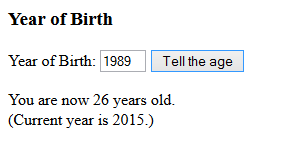

Make a program that asks for the year of birth and then tells the age accordingly.
Sample output for shown input:

HINTS:
- Check that the given year of birth is not more than the current year
- var today = new Date() gives the date + time of this moment.
- getFullYear() method can be used to get the current year out from the today variable.
- Check the year
- And calculate the (rough estimate of the) age based on a) given year and b) the resolved current year
Submit a link to your code (myy or jsbin).